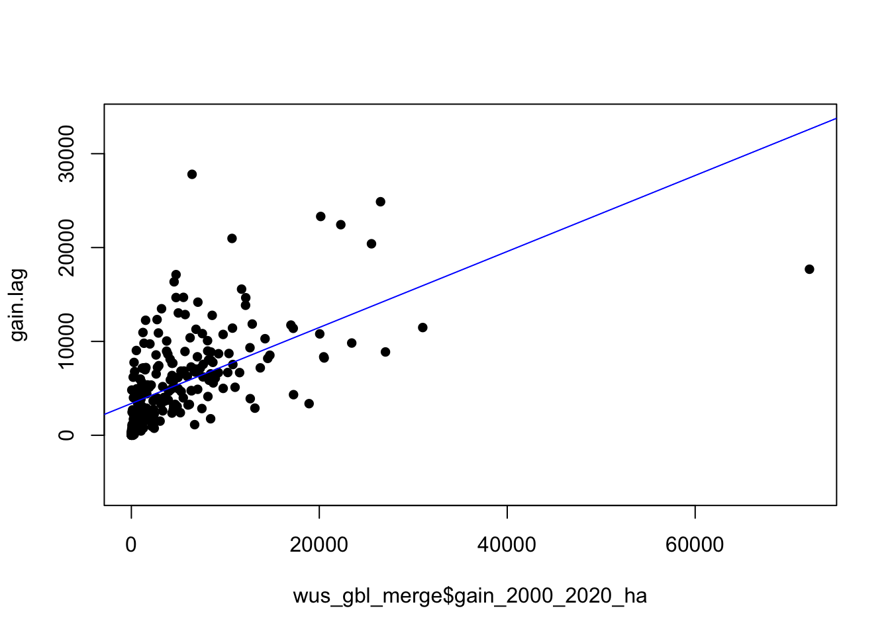
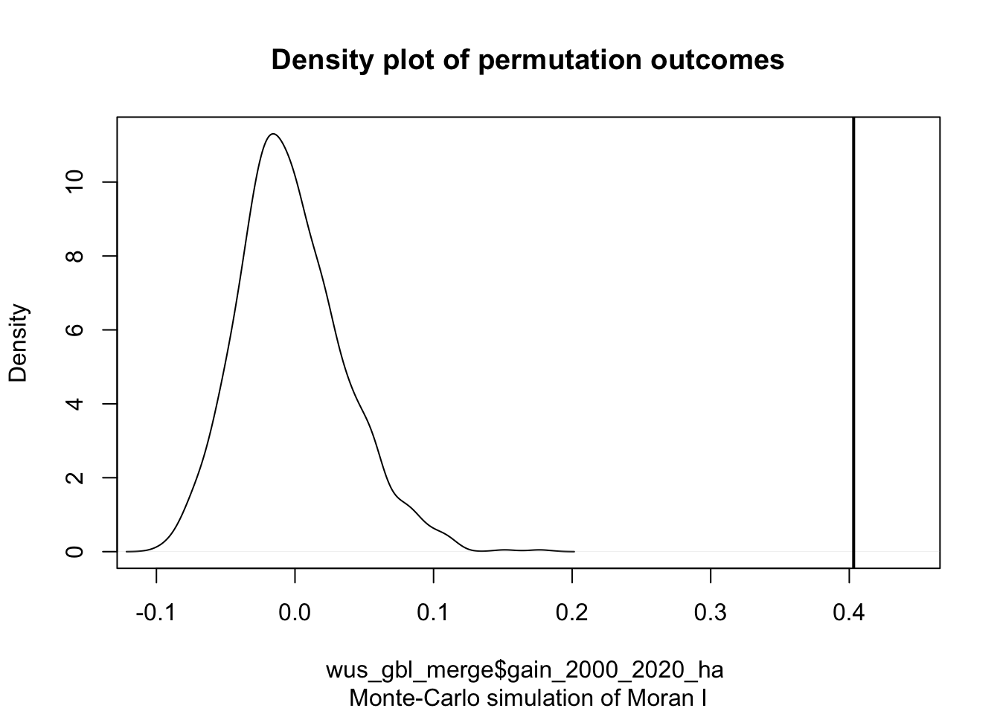
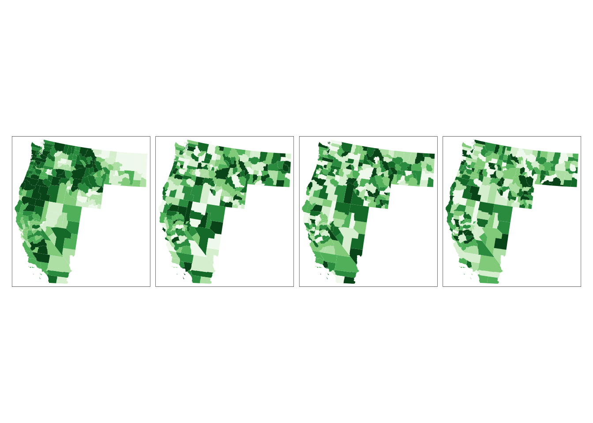
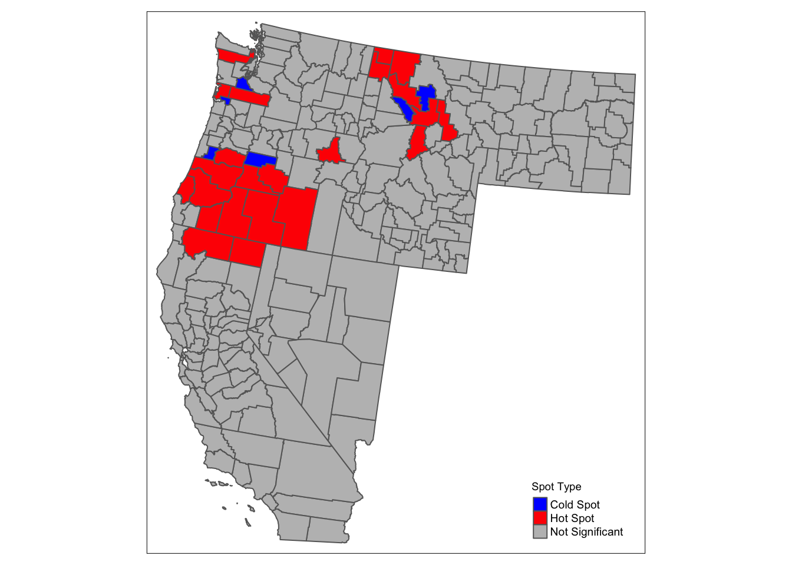
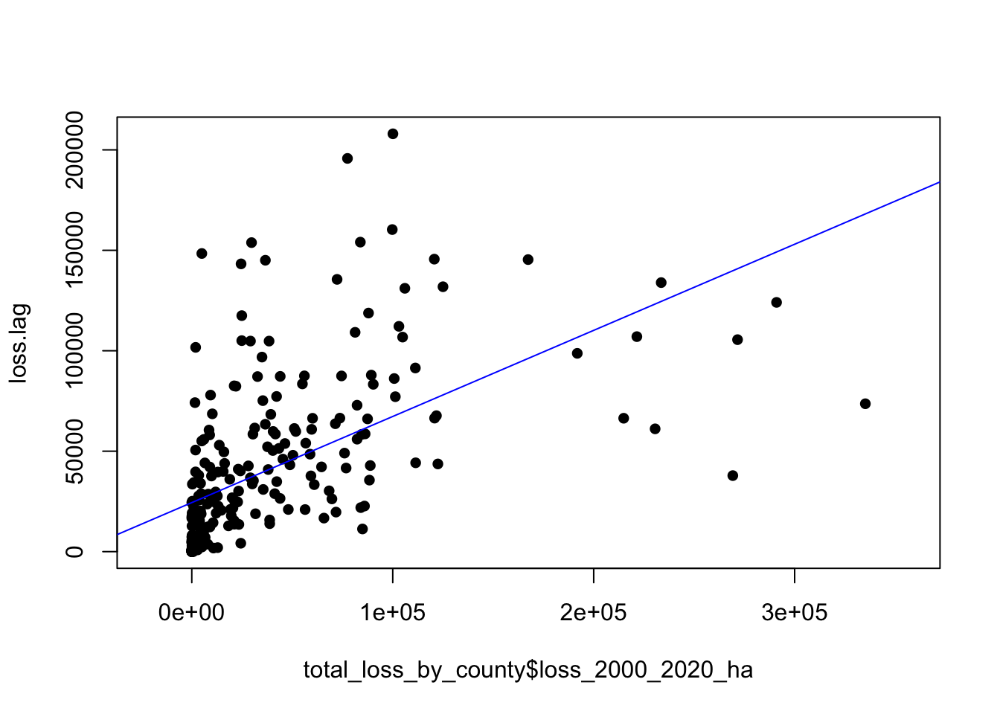
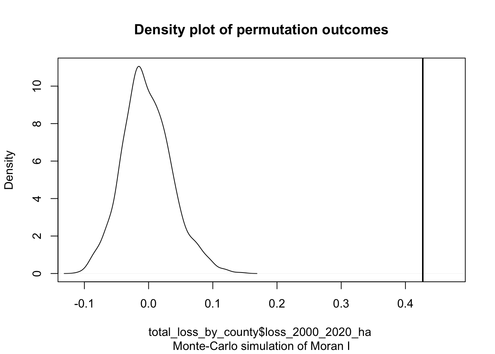
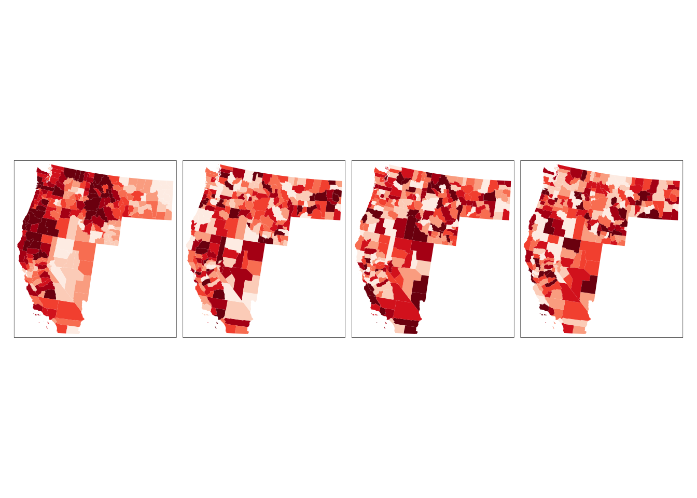
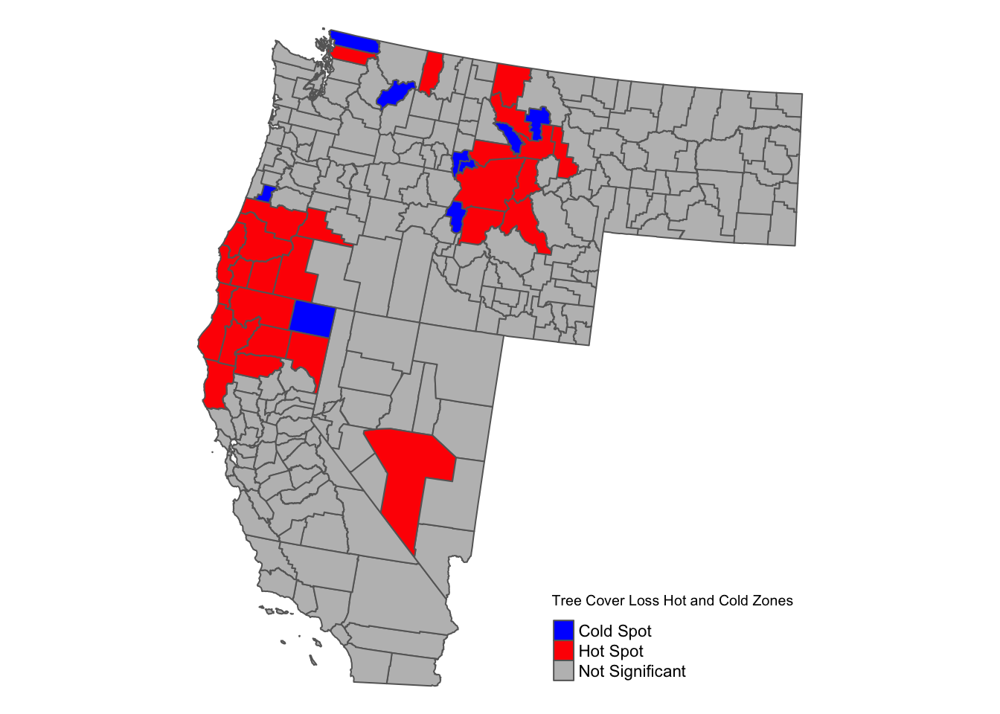

library(tidyverse)## ── Attaching core tidyverse packages ─── tidyverse 2.0.0 ──
## ✔ forcats 1.0.0 ✔ purrr 1.0.1
## ✔ lubridate 1.9.2 ✔ tibble 3.2.1
## ── Conflicts ───────────────────── tidyverse_conflicts() ──
## ✖ dplyr::filter() masks stats::filter()
## ✖ dplyr::lag() masks stats::lag()
## ℹ Use the conflicted package (<http://conflicted.r-lib.org/>) to force all conflicts to become errorslibrary(sf)## Linking to GEOS 3.10.2, GDAL 3.4.2, PROJ 8.2.1; sf_use_s2() is TRUElibrary(ggplot2)
library(RColorBrewer)
library(tigris)## To enable caching of data, set `options(tigris_use_cache = TRUE)`
## in your R script or .Rprofile.library(ggplot2)
library(classInt)
library(spdep)## Loading required package: spData
## To access larger datasets in this package, install the spDataLarge package with:
## `install.packages('spDataLarge', repos='https://nowosad.github.io/drat/', type='source')`library(tmap)
library(DT)
getwd()## [1] "/Users/jessebrodrick/Desktop/490Pro/GEOG490"df <- read_csv("/Users/jessebrodrick/Desktop/490Pro/data/GlblFW/CTCL1.csv")## Rows: 25184 Columns: 30
## ── Column specification ───────────────────────────────────
## Delimiter: ","
## chr (3): country, subnational1, subnational2
## dbl (27): threshold, area_ha, extent_2000_ha, extent_2010_ha, gain_2000_2020_ha, tc_loss_ha_2001, tc_...
##
## ℹ Use `spec()` to retrieve the full column specification for this data.
## ℹ Specify the column types or set `show_col_types = FALSE` to quiet this message.# Options to return tigris objects as sf objects
options(tigris_class = "sf")
options(tigris_use_cache = TRUE)
# Obtain state boundaries
states_sf <- states(cb = TRUE)## Retrieving data for the year 2021# Obtain county boundaries
counties_sf <- counties(cb = TRUE)## Retrieving data for the year 2021# Filter for western states and their counties
western_states <- c("Washington", "Oregon", "California", "Idaho",
"Montana", "Nevada")
# Filter state and counties for western states sf
wus_states_sf <- states_sf[states_sf$NAME %in% western_states, ]
wus_counties_sf <- counties_sf[counties_sf$STATE_NAME %in% western_states, ]
# Projection
laea = st_crs("+proj=laea +lat_0=30 +lon_0=-100") # Lambert Azimuthal Equal Area
wus_states_sf_pro = st_transform(wus_states_sf, laea)
wus_counties_sf_pro = st_transform(wus_counties_sf, laea)# Subset data based on the western states with a canopy density threshold of 50
df_subset <- df[df$subnational1 %in% western_states, ] %>%
filter(threshold == 50)
head(df_subset)## # A tibble: 6 × 30
## country subnational1 subnational2 threshold area_ha extent_2000_ha extent_2010_ha gain_2000_2020_ha
## <chr> <chr> <chr> <dbl> <dbl> <dbl> <dbl> <dbl>
## 1 United Sta… California Alameda 50 193504 21034 27052 1613
## 2 United Sta… California Alpine 50 191835 53981 40667 701
## 3 United Sta… California Amador 50 156853 38417 49461 1061
## 4 United Sta… California Butte 50 434521 163077 169724 4657
## 5 United Sta… California Calaveras 50 268505 75162 101364 2315
## 6 United Sta… California Colusa 50 301134 31108 29999 3335
## # ℹ 22 more variables: tc_loss_ha_2001 <dbl>, tc_loss_ha_2002 <dbl>, tc_loss_ha_2003 <dbl>,
## # tc_loss_ha_2004 <dbl>, tc_loss_ha_2005 <dbl>, tc_loss_ha_2006 <dbl>, tc_loss_ha_2007 <dbl>,
## # tc_loss_ha_2008 <dbl>, tc_loss_ha_2009 <dbl>, tc_loss_ha_2010 <dbl>, tc_loss_ha_2011 <dbl>,
## # tc_loss_ha_2012 <dbl>, tc_loss_ha_2013 <dbl>, tc_loss_ha_2014 <dbl>, tc_loss_ha_2015 <dbl>,
## # tc_loss_ha_2016 <dbl>, tc_loss_ha_2017 <dbl>, tc_loss_ha_2018 <dbl>, tc_loss_ha_2019 <dbl>,
## # tc_loss_ha_2020 <dbl>, tc_loss_ha_2021 <dbl>, tc_loss_ha_2022 <dbl># Merging projected SF to GFW data frame
wus_gbl_merge <- wus_counties_sf_pro %>%
left_join(df_subset, by = c("STATE_NAME" = "subnational1", "NAME" = "subnational2"))
# Replacing NA's with zero
wus_gbl_merge <- wus_gbl_merge %>%
mutate(gain_2000_2020_ha = replace_na(gain_2000_2020_ha, 0))nb <- poly2nb(wus_gbl_merge, queen=TRUE)
nb[1]## [[1]]
## [1] 93 215 219 233lw <- nb2listw(nb, style="W", zero.policy=TRUE)
lw$weights[1]## [[1]]
## [1] 0.25 0.25 0.25 0.25gain.lag <- lag.listw(lw, wus_gbl_merge$gain_2000_2020_ha)
gain.lag## [1] 1362.25000 557.50000 17690.71429 5993.28571 4033.50000 8559.66667 6979.66667 2405.75000
## [9] 11740.33333 5901.66667 4429.76923 4004.60000 631.00000 3439.25000 7139.00000 550.00000
## [17] 766.75000 5638.50000 6126.75000 458.40000 2578.66667 994.20000 407.20000 7146.20000
## [25] 4660.50000 1021.55556 5114.50000 9828.87500 4129.66667 7213.14286 15.20000 14182.85714
## [33] 6533.75000 3074.25000 2578.66667 1632.16667 3758.57143 8363.25000 6370.40000 261.20000
## [41] 11853.50000 1434.60000 508.60000 1185.33333 14676.00000 2891.14286 2674.00000 5841.60000
## [49] 3229.57143 7.75000 13032.66667 0.00000 1634.85714 960.66667 9806.00000 1569.00000
## [57] 7236.25000 8238.62500 8190.16667 9330.16667 2178.83333 7768.66667 3294.66667 16350.25000
## [65] 3849.62500 3660.00000 459.00000 11396.77778 11416.50000 8644.33333 1968.00000 7276.66667
## [73] 5214.75000 2886.60000 1771.12500 2145.00000 2069.75000 4671.60000 134.00000 2367.00000
## [81] 8020.14286 9033.33333 7059.25000 2246.75000 2075.83333 5578.00000 5367.75000 8959.00000
## [89] 663.37500 7183.40000 8690.60000 4370.75000 948.40000 5860.85714 20402.83333 8877.22222
## [97] 5348.50000 4762.66667 7538.66667 8928.50000 8713.25000 5324.83333 2752.12500 2467.66667
## [105] 17116.33333 2223.90000 1509.60000 6189.00000 791.25000 10288.60000 52.40000 6689.14286
## [113] 7184.50000 3752.00000 13851.00000 3987.50000 10801.20000 7761.25000 1132.60000 1568.20000
## [121] 3535.16667 3985.00000 566.66667 4997.00000 10082.00000 12253.66667 455.71429 4669.83333
## [129] 484.25000 4962.50000 6155.16667 3079.00000 22437.14286 8977.66667 11292.50000 4327.28571
## [137] 2993.20000 416.25000 3112.00000 3658.20000 2311.50000 3773.00000 1993.75000 8106.00000
## [145] 6784.00000 3119.11111 6577.33333 15570.00000 751.12500 12862.00000 2848.66667 7416.80000
## [153] 5981.60000 10898.16667 10044.25000 12327.25000 5116.00000 365.00000 8357.77778 24882.50000
## [161] 5184.57143 3901.37500 188.60000 11479.00000 2602.00000 3784.33333 3369.75000 10951.00000
## [169] 1760.44444 10743.71429 6547.00000 1192.42857 1608.80000 23313.00000 932.40000 10388.57143
## [177] 13481.80000 4738.85714 6803.55556 90.66667 10833.50000 4819.66667 3326.20000 5058.60000
## [185] 6844.75000 6837.80000 1440.00000 95.50000 20972.83333 9.25000 1068.50000 8530.57143
## [193] 2879.20000 12.00000 738.66667 6678.71429 2721.75000 4866.00000 14693.33333 6218.66667
## [201] 7684.50000 9731.40000 1141.00000 8868.50000 347.25000 27803.00000 13.00000 6728.50000
## [209] 676.20000 1624.00000 192.00000 772.20000 4955.28571 14655.50000 1050.85714 2582.50000
## [217] 6085.60000 317.00000 2274.40000 3820.25000 4897.66667 2636.14286 3890.25000 2697.83333
## [225] 7957.71429 2417.83333 7556.16667 606.66667 1513.25000 592.20000 195.00000 5716.60000
## [233] 671.40000 3421.00000 3288.50000 4896.40000 24.83333 11.50000 6673.71429 3539.20000
## [241] 2709.16667 6275.00000 729.50000 2157.00000 786.33333 509.42857 12777.80000 7667.33333
## [249] 1714.60000 2329.75000plot(gain.lag ~ wus_gbl_merge$gain_2000_2020_ha, pch=16, asp=1)
M1 <- lm(gain.lag ~ wus_gbl_merge$gain_2000_2020_ha)
abline(M1, col="blue")
coef(M1)[2]## wus_gbl_merge$gain_2000_2020_ha
## 0.4049434I <- moran(wus_gbl_merge$gain_2000_2020_ha, lw, length(nb), Szero(lw))[1]
I## $I
## [1] 0.4047753moran.test(wus_gbl_merge$gain_2000_2020_ha,lw, alternative="greater")##
## Moran I test under randomisation
##
## data: wus_gbl_merge$gain_2000_2020_ha
## weights: lw n reduced by no-neighbour observations
##
##
## Moran I statistic standard deviate = 10.961, p-value < 2.2e-16
## alternative hypothesis: greater
## sample estimates:
## Moran I statistic Expectation Variance
## 0.403156236 -0.004032258 0.001380136####There is less than a 6% likelihood that the observed pattern could be the result of random chance
#p-value of 2.2e-16 suggesting that there would be a an extremely low chance of being wrong in rejecting the null hypothesis or that there is a 0.000.. chance that our observed pattern is consistent with a random process
MC<- moran.mc(wus_gbl_merge$gain_2000_2020_ha, lw, nsim=999, alternative="greater")
# View results (including p-value)
MC##
## Monte-Carlo simulation of Moran I
##
## data: wus_gbl_merge$gain_2000_2020_ha
## weights: lw
## number of simulations + 1: 1000
##
## statistic = 0.40316, observed rank = 1000, p-value = 0.001
## alternative hypothesis: greater# Plot the Null distribution (note that this is a density plot instead of a histogram)
plot(MC)
#The curve shows the distribution of Moran I values we could expect had the gain values been randomly distributed across the counties. Note that our observed statistic, 0.403156236, falls to the right of the distribution suggesting that the gain values are clustered (a positive Moran’s I value suggests clustering whereas a negative Moran’s I value suggests dispersion).
# A visual used assess how “typical” or “atypical” your pattern may be relative to a randomly distributed pattern is to plot the observed pattern alongside a few simulated patterns generated under the null hypothesis
set.seed(131)
wus_gbl_merge$rand1 <- sample(wus_gbl_merge$gain_2000_2020_ha, length(wus_gbl_merge$gain_2000_2020_ha), replace = FALSE)
wus_gbl_merge$rand2 <- sample(wus_gbl_merge$gain_2000_2020_ha, length(wus_gbl_merge$gain_2000_2020_ha), replace = FALSE)
wus_gbl_merge$rand3 <- sample(wus_gbl_merge$gain_2000_2020_ha, length(wus_gbl_merge$gain_2000_2020_ha), replace = FALSE)
# Plotting (the first one is real)
tm_shape(wus_gbl_merge) + tm_fill(col=c("gain_2000_2020_ha", "rand1", "rand2", "rand3"),
style="quantile", n=8, palette="Greens", legend.show = FALSE) +
tm_facets( nrow=1)
# Calculate Local Moran's I
local_morans_i <- localmoran(wus_gbl_merge$gain_2000_2020_ha, lw)
# Convert to a dataframe for easier manipulation
local_morans_df <- as.data.frame(local_morans_i)
# Add the Local Moran's I values and p-values to your spatial data frame
wus_gbl_merge$localI <- local_morans_df[,1]
wus_gbl_merge$p_value <- local_morans_df[,5]
# Classify into hot spots, cold spots based on Local Moran's I and p-values
# Here we consider hot spots as positive local I values with significant p-values (e.g., p < 0.05)
# and cold spots as negative local I values with significant p-values.
wus_gbl_merge$spot_type <- case_when(
wus_gbl_merge$localI > 0 & wus_gbl_merge$p_value < 0.05 ~ "Hot Spot",
wus_gbl_merge$localI < 0 & wus_gbl_merge$p_value < 0.05 ~ "Cold Spot",
TRUE ~ "Not Significant"
)
# Visualize the hot and cold spots
tm_shape(wus_gbl_merge) +
tm_fill(col = "spot_type", palette = c("Hot Spot" = "red", "Cold Spot" = "blue", "Not Significant" = "grey"),
title = "Spot Type") +
tm_borders() +
tm_layout(legend.title.size = 0.7, legend.text.size = 0.6) +
tm_legend(position = c("right", "bottom"))
# Creating table for data interpretation
hot_cold_zones1 <- wus_gbl_merge %>%
filter(spot_type %in% c("Hot Spot", "Cold Spot")) %>%
select(NAME, STATE_NAME, gain_2000_2020_ha, localI, p_value, spot_type) %>%
st_set_geometry(NULL)
if (requireNamespace("DT", quietly = TRUE)) {
DT::datatable(hot_cold_zones1, options = list(pageLength = 5),
caption = "Counties and States in Hot and Cold Zones")
}# Merging projected SF to GFW data frame
wus_loss_merge <- wus_counties_sf_pro %>%
left_join(df_subset, by = c("STATE_NAME" = "subnational1", "NAME" = "subnational2"))
# Replacing NA's with zero
total_loss_by_county <- wus_loss_merge %>%
mutate(across(starts_with("tc_loss_ha_"), as.numeric, .names = "numeric_{.col}")) %>%
rowwise() %>%
mutate(loss_2000_2020_ha = sum(c_across(starts_with("numeric_tc_loss_ha_")), na.rm = TRUE)) %>%
ungroup() %>%
select(-starts_with("numeric_tc_loss_ha_")) # Removing temporary numeric columns
nb1 <- poly2nb(total_loss_by_county, queen=TRUE)
nb1[1]## [[1]]
## [1] 93 215 219 233lw1 <- nb2listw(nb1, style="W", zero.policy=TRUE)
lw1$weights[1]## [[1]]
## [1] 0.25 0.25 0.25 0.25loss.lag <- lag.listw(lw, total_loss_by_county$loss_2000_2020_ha)
loss.lag## [1] 12362.50000 1680.00000 145606.14286 74178.57143 25640.00000 50345.33333 42110.16667
## [8] 24747.75000 77129.16667 66405.00000 19338.76923 19208.80000 5943.16667 9909.75000
## [15] 58351.42857 4369.71429 12498.75000 145056.00000 41615.25000 4749.20000 33604.16667
## [22] 4824.00000 1004.80000 68601.00000 154077.50000 12829.77778 28860.50000 67681.62500
## [29] 35598.50000 77927.00000 7.80000 91420.57143 20984.75000 12270.50000 25790.83333
## [36] 18794.16667 27741.14286 41061.25000 25560.40000 3415.60000 42686.25000 1082.60000
## [43] 865.00000 8137.66667 104821.75000 15526.28571 30264.50000 34848.40000 19172.85714
## [50] 1.75000 77246.33333 0.00000 6298.57143 8676.66667 160335.40000 15108.50000
## [57] 44164.25000 16697.00000 98715.50000 60872.50000 378.33333 30956.16667 58623.33333
## [64] 87142.25000 55091.50000 63412.20000 1990.62500 118764.44444 83301.83333 105044.66667
## [71] 11294.80000 55992.66667 39622.50000 4909.40000 13925.87500 26828.50000 14420.75000
## [78] 34411.40000 4655.25000 6974.83333 106796.00000 82336.00000 40874.75000 2645.50000
## [85] 2047.16667 43656.75000 17052.12500 44220.00000 7525.12500 68334.40000 53816.00000
## [92] 4274.00000 4350.60000 33349.00000 124081.33333 61124.55556 29701.25000 135540.33333
## [99] 145386.33333 72880.16667 22698.25000 13674.66667 18852.87500 24417.66667 143253.33333
## [106] 17257.50000 33698.20000 16682.00000 565.50000 49042.80000 943.20000 66085.42857
## [113] 25110.25000 19682.20000 105530.62500 36762.75000 66466.20000 101692.00000 11282.20000
## [120] 9678.40000 28634.16667 3337.00000 2844.33333 42190.00000 66384.00000 148424.00000
## [127] 1272.85714 28849.66667 1235.50000 21703.83333 66459.50000 24816.00000 87243.00000
## [134] 131091.33333 109179.66667 37849.14286 12700.00000 4545.75000 23687.80000 17844.80000
## [141] 7090.33333 5947.75000 21050.75000 21920.00000 38027.00000 19757.66667 55861.50000
## [148] 87885.33333 2330.12500 153840.00000 4172.33333 133927.80000 34012.20000 46049.66667
## [155] 131866.00000 96851.25000 59832.00000 873.00000 73623.44444 107033.33333 35331.42857
## [162] 26250.37500 4586.40000 112153.25000 39915.80000 87468.00000 36027.62500 53004.00000
## [169] 1194.22222 30155.57143 27230.00000 781.85714 13224.80000 42858.80000 8232.40000
## [176] 63680.57143 82538.60000 49651.14286 53996.77778 1072.66667 87502.25000 43925.83333
## [183] 17559.80000 40177.60000 58543.25000 61536.80000 1785.14286 362.83333 117486.66667
## [190] 2.00000 3071.25000 86172.71429 668.40000 2.00000 619.33333 27700.00000
## [197] 26489.12500 2397.00000 75178.33333 52193.00000 48523.50000 50574.00000 2284.00000
## [204] 104809.50000 1486.75000 195753.50000 11.66667 61310.75000 980.20000 3951.33333
## [211] 837.20000 3905.80000 39697.00000 208000.00000 3777.71429 18705.87500 83497.80000
## [218] 5579.00000 15761.20000 1594.75000 2821.33333 5583.14286 772.25000 60524.33333
## [225] 58483.71429 22421.33333 59823.83333 7184.83333 3756.00000 7299.40000 12768.33333
## [232] 37709.80000 14357.40000 15381.16667 20951.66667 47971.40000 269.16667 1.50000
## [239] 43219.42857 58113.80000 2021.00000 51399.40000 2278.00000 20582.75000 2922.50000
## [246] 3586.85714 37640.60000 22631.33333 13551.80000 20225.75000plot(loss.lag ~ total_loss_by_county$loss_2000_2020_ha, pch=16, asp=1)
M1 <- lm(loss.lag ~ total_loss_by_county$loss_2000_2020_ha)
abline(M1, col="blue")
coef(M1)[2]## total_loss_by_county$loss_2000_2020_ha
## 0.428762I <- moran(total_loss_by_county$loss_2000_2020_ha, lw1, length(nb), Szero(lw1))[1]
I## $I
## [1] 0.4287462moran.test(total_loss_by_county$loss_2000_2020_ha,lw1, alternative="greater")##
## Moran I test under randomisation
##
## data: total_loss_by_county$loss_2000_2020_ha
## weights: lw1 n reduced by no-neighbour observations
##
##
## Moran I statistic standard deviate = 10.992, p-value < 2.2e-16
## alternative hypothesis: greater
## sample estimates:
## Moran I statistic Expectation Variance
## 0.427031245 -0.004032258 0.001537987####There is less than a 6% likelihood that the observed pattern could be the result of random chance
#p-value of 2.2e-16 suggesting that there would be a an extremely low chance of being wrong in rejecting the null hypothesis or that there is a 0.000.. chance that our observed pattern is consistent with a random process
MC<- moran.mc(total_loss_by_county$loss_2000_2020_ha, lw1, nsim=999, alternative="greater")
# View results (including p-value)
MC##
## Monte-Carlo simulation of Moran I
##
## data: total_loss_by_county$loss_2000_2020_ha
## weights: lw1
## number of simulations + 1: 1000
##
## statistic = 0.42703, observed rank = 1000, p-value = 0.001
## alternative hypothesis: greater# Plot the Null distribution (note that this is a density plot instead of a histogram)
plot(MC)
#The curve shows the distribution of Moran I values we could expect had the forest loss been randomly distributed across the counties. Note that our observed statistic, 0.42703, falls to the right of the distribution suggesting that the loss values are clustered (a positive Moran’s I value suggests clustering whereas a negative Moran’s I value suggests dispersion).
set.seed(131)
total_loss_by_county$rand1 <- sample(total_loss_by_county$loss_2000_2020_ha, length(total_loss_by_county$loss_2000_2020_ha), replace = FALSE)
total_loss_by_county$rand2 <- sample(total_loss_by_county$loss_2000_2020_ha, length(total_loss_by_county$loss_2000_2020_ha), replace = FALSE)
total_loss_by_county$rand3 <- sample(total_loss_by_county$loss_2000_2020_ha, length(total_loss_by_county$loss_2000_2020_ha), replace = FALSE)
# Plotting (first map is real data)
tm_shape(total_loss_by_county) + tm_fill(col=c("loss_2000_2020_ha", "rand1", "rand2", "rand3"),
style="quantile", n=8, palette="Reds", legend.show = FALSE) +
tm_facets( nrow=1)
# Calculate Local Moran's I for tree cover loss
local_morans_i_loss <- localmoran(total_loss_by_county$loss_2000_2020_ha, lw1)
# Incorporate Local Moran's I stats into the total_loss_by_county dataframe
total_loss_by_county$localI <- local_morans_i_loss[,1] # Local Moran's I value
total_loss_by_county$p.value <- local_morans_i_loss[,5] # P-value
# Define hot (High-High) and cold (Low-Low) spots based on Local Moran's I and p-value
total_loss_by_county$hot_cold_zone <- ifelse(total_loss_by_county$localI > 0 & total_loss_by_county$p.value < 0.05, "Hot Spot",
ifelse(total_loss_by_county$localI < 0 & total_loss_by_county$p.value < 0.05, "Cold Spot", "Not Significant"))
# Visualize Hot and Cold Zones with tmap
tm_shape(total_loss_by_county) +
tm_fill(col = "hot_cold_zone",
palette = c("Hot Spot" = "red", "Cold Spot" = "blue", "Not Significant" = "grey"),
title = "Tree Cover Loss Hot and Cold Zones") +
tm_borders() +
tm_legend(position = c("right", "bottom")) +
tm_layout(frame = FALSE)
# Creating table for data interpretation
hot_cold_zones <- total_loss_by_county %>%
filter(hot_cold_zone %in% c("Hot Spot", "Cold Spot")) %>%
select(NAME, STATE_NAME, loss_2000_2020_ha, localI, p.value, hot_cold_zone) %>%
st_set_geometry(NULL)
if (requireNamespace("DT", quietly = TRUE)) {
DT::datatable(hot_cold_zones, options = list(pageLength = 5),
caption = "Detailed Counties and States in Hot and Cold Zones")
}